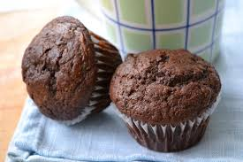

Best Chocolate Muffins
This is the best chocolate muffins recipe ever! Simple ingredients, quick to prepare and amazingly delicious. These chocolate muffins turn out perfectly every single time!

Ingredients
- 2 cups all-purpose flour
- 1 cup white sugar
- 3/4 cup chocolate chips
- 1/2 cup unsweetened cocoa powder
- 1 teaspoon baking soda
- 1 egg
- 1 cup plain yogurt
- 1/2 cup milk
- 1 teaspoon vanilla extract
- 1/2 cup vegetable oil
- 1/4 cup chocolate chips
Directions
- Perheat oven to 400 degrees F(200 degrees C). Grease 12 muffin cups or line with paper muffin liners.
- Combine flour,sugar,3/4 cup chocolate chips,cocoa powder, and baking soda in a large bowl. Whisk egg, yogurt, milk, vanilla,and vegetable oil in another bowl until smooth; pour into chocolate mixture and stir until batter is just blended. Fill prepared muffin cups 3/4 full and sprinkle with remaining 1/4 cup chocolate chips.
- Bake in preheated oven until a toothpick inserted into the center comes out clean, about 20 minutes. cool in the pans for 10 minutes before removing to cool completely on a wire rack.
Nutrition Facts
Per Serving:
321.6 calories; protein 5.4g 11% DV; carbohydrates 45.3g 15% DV; fat 15g 23% DV; cholesterol 17.5mg 6% DV; sodium 131.9mg 5% DV.